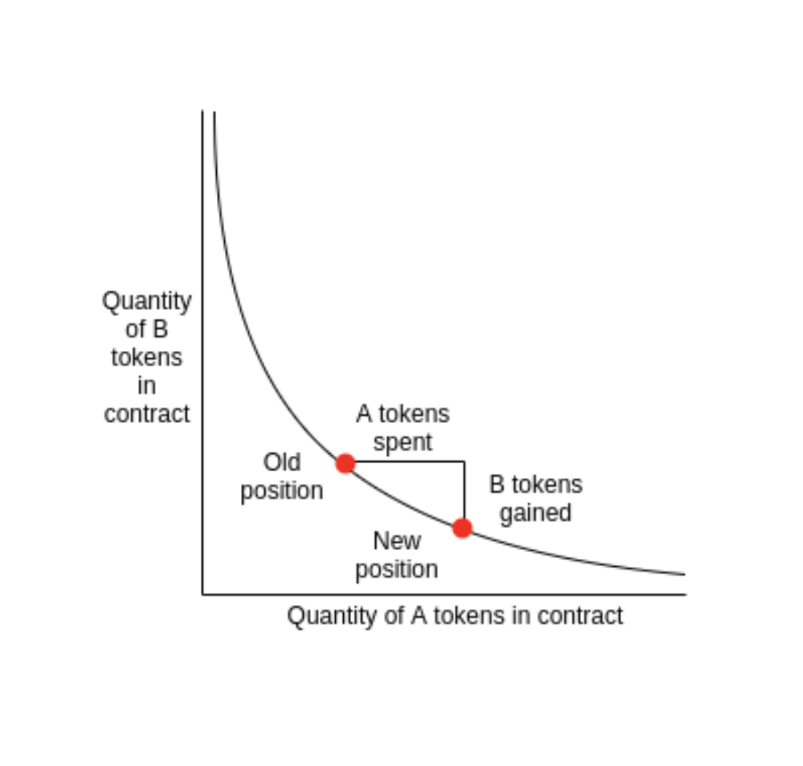

An automated market maker (AMM) is a smart contract that holds assets and is always willing to quote you a price between two assets. You can trade against the AMM's capital in the smart contract instead of between peers. It uses the trades to update the size of the assets and update their price accordingly. The AMM can always guarantee liquidity by raising the price for an asset according to market demand.
There are various ones, however we will focus on the most important features popularized by UniSwap. Haseeb Qureshi explains UniSwap well here. We will cover another type of DEX protocol in a later section.
This section will give an overview of two key concepts that make AMMs possible.
Automated Market Makers rely on liquidity pools to source capital. Liquidity pools are collections of tokens locked into a smart contract. This allows for decentralized capital formation. They are used to facilitate trading by providing liquidity, defined as the ability to convert an asset into cash or its equivalents without greatly affecting its market price. This is important because an asset's value is determined by what others are willing to pay for it and how easily it can be bought or sold.
The main ideas behind liquidity pools are:
The downside:
The other key to Automated Market Makers is the bonding curve. A bonding curve is a mathematical formula used to describe the relationship between the price and the supply of an asset. This can be thought of as a deterministic pricing formula. This formula is called the Constant Product Formula in UniSwap. This curve can be represented in a smart contract that can buy or sell the underlying token. Bonding Curves emerge out of the ability to escrow funds in a smart contract.
The main ideas behind the Constant Product Formula are: -To always ensure liquidity for any asset by modelling the demand curve in the smart contract.
x * y = k
x = supply of asset 1 y = supply of asset 2 k = Fixed Size of Pool

The downside:
Different AMMs have variations of this deterministic pricing formula depending on their need. Curve implements a special formula to allow stablecoins trades for assets that are a stable representation of each other, which results in a narrow trading band. An example of this is trading between ETH and sETH (synthetic ETH) or USDC and DAI, which should both be pegged close to the US Dollar.
With Automated Market Makers similar to UniSwap v2, prices are synched with outside markets via arbitrageurs who spot price differences between exchanges. These exchanges can be other DEXes or centralized exchanges. Arbitrageurs capture the profit, which is the difference in price between the two markets.
A consequence of this is impermanent loss for liquidity providers, the difference between holding an asset and providing liquidity. This is similar to an opportunity cost which if realized turns into a real loss. Impermanent loss is also described in this animated video and article and here.
Uniswap V3 has other features like Range Orders and Limit Orders which you can explore. Some AMMs can hold more than two assets, namely Balancer, but these are more sophisticated and rely on Bonding Surfaces.
DeFi and the Future of Finance (section 4.7.2) DeFi and the Future of Finance (section 6.2) Graphical Guide for Understanding Uniswap via EthHub